Uw maarshalk is uw sterkste stuk, toch blijft hij kwetsbaar want hij kan aangevallen worden door een vijandige
spion.
Uw verkenners zijn zwak maar wel mobiel en effectief om de identiteit van vijandige stukken te achterhalen.
Ze kunnen ook binnen 1 beurt grotere afstanden afleggen.
Je hebt de mineurs nodig om de vijandige bommen uit te schakelen.
Dus verlies nooit al je mineurs in begin van het spel. Plaats vakkundig uw eigen bommen.
Gebruik ze steeds om uw vlag te verdedigen.
Successvol stratego vereist planning, misleiding en goed geheugen. Elk spel is ook steeds anders.
Spelregels
Het doel van het spel is om de vlag van je tegenstander te verslaan.
Elk leger bestaat uit:
beweegbare stukken
| Naam |
Afbeelding |
Aantal |
| Marshall |
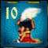 |
1 |
| Generaal (General) |
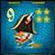 |
1 |
| Kolonel (Colonel) |
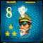 |
2 |
| Majoor (Major) |
|
3 |
| Kapitein (Captain) |
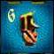 |
4 |
| Lieutenanten (Lieutanant) |
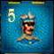 |
4 |
| Sergeant (Sergeant) |
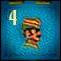 |
5 |
| Mineur (Miner) |
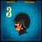 |
5 |
| Verkenner (Scout) |
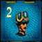 |
6 |
| Spion (Spy) |
|
1 |
Lijst van bewegende stukken
stilstaande stukken
| Naam |
Afbeelding |
Aantal |
| Vlag (Flag) |
|
1 |
| Bom (Bomb) |
|
6 |
Lijst van stilstaande stukken
DE OPSTELLING
- 1. Plaats het spelbord tussen jou en je tegenstander met de naam Stratego naar gericht naar ieder van beiden.
- 2. Verberg een rode stuk in de ene hand en een blauwe stuk in de andere. Je tegenstander kiest een hand en
speelt
met de kleur die hij aanwijst.
- 3. Stel je legers op met behulp van de strategie-tips en regels die hieronder worden besproken.
- 4. Plaats uw stukken op het speelbord zodat je tegenstander hun identiteit niet kan zien. Je tegenstander doet
hetzelfde.
- 5. Elk vak kan maar door 1 stuk bezet worden. Overal op de laatste vier rijen van het speelbord (op uw helft)
worden stukken geplaatst. De twee middelste rijen blijven vrij aan het begin van het spel, zoals weergegeven in
figuur 1.
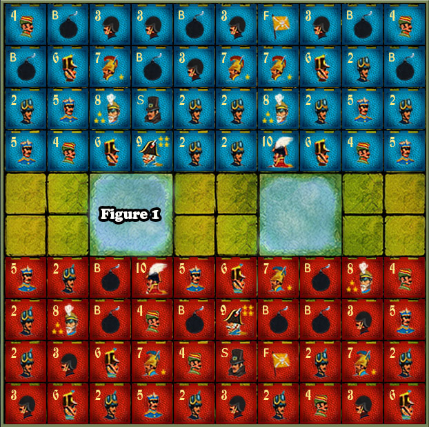
mogelijk voorbeeld van een volledig board na setup
SPELVERLOOP
Jij en je tegenstander speelt met om beurt. Rood begint steeds.
Als je aan zet bent moet je ofwel:
- een stuk bewegen of verplaatsen -- Dit naar een aangrenzend veld.
- of een aanval uitvoeren -- op een stuk van je tegenstander.
REGELS OM TE BEWEGEN OF VERPLAATSEN
- 1. Stukken bewegen 1 veld per keer, vooruit, achteruit of zijwaarts. (Uitzondering: de verkenner Privilege,
Regel
6).
- 2. Stukken kunnen niet diagonaal bewegen. Ze kunnen niet springen over een ander stuk. Ze kunnen niet
verplaatsen
naar een veld al bezet door een ander stuk (tenzij aanvallen).
- 3. Stukken kunnen niet springen of te verplaatsen naar de twee gebieden in het midden van het bord die worden
aangegeven door de stippellijnen. Zie Figuur 1.
- 4. Een stuk kan niet heen en weer bewegen tussen dezelfde twee velden in drie opeenvolgende beurten.
- 5. Slechts 1 stuk kan worden verplaatst in een beurt.
- 6. De verkenner: Een verkenner kan een willekeurig aantal open velden vooruit, achteruit of opzij. Maar vergeet
niet dat deze beweging de identiteit van je stuk zal verraden.
vergeet niet dat de bom en de Vlag stukken niet verplaatst worden en moet blijven op de pleinen waar ze
oorspronkelijk werden geplaatst tijdens het spel.
REGELS OM AAN TE VALLEN
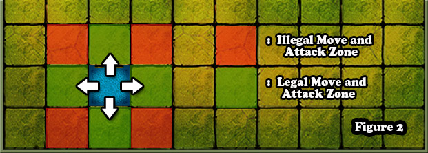
- 1. Aanval Positie: Wanneer een rood en blauw stuk 2 aangrenzende velden bezetten zijn ze in staat om aan te
vallen. Zie Figuur 2.
- 2. Hoe aan te vallen: om aan te vallen tijdens je beurt neem je het aanvallende stuk en tik je met dit stuk het
stuk van de tegenstander aan. Vervolgens maak je de rang van je aanvallende stuk bekend. Je tegenstander vertelt
ook
de rang van het verdedigende stuk.
- 3. Het stuk met de lagere rang (en dus lager nummer) verliest en wordt van het bord verwijderd. De aanvallende
stuk neemt de plaats in van het verloren stuk.
- 4. Wanneer de beide stukken dezelfde rang hebben worden ze beiden verwijderd.
- 5. Aanvallen is altijd optioneel. Je bent dit niet verplicht te doen.
REGELS IN VERBAND MET RANG
- 1. Een Maarschalk (Nummer 10) verslaat een Generaal (nummer 9) en alle lagere rangen.
- Een General (Nummer 9) verslaat een kolonel (nummer 8) en alle lagere rangen.
- Een kolonel (nummer 8) verslaat een Majoor (nummer 7) en alle lagere rangen. enz...
- 2. Speciale eigenschap van de Mineur. Wanneer een stuk (met uitzondering van een Mineur(3) een bom aanvalt zal
dat
aanvallende stuk verliezen. Als een Mineur een bom aanvalt, wordt de bom onschadelijk gemaakt en verwijderd van
het
speelbord. Bommen blijven op hetzelfde veld staan tijdens het spel want ze kunnen niet bewegen. Bommen kunnen
daarom
ook niet aanvallen.
- 3.Speciale eigenschap van de Spion. Een spion heeft de laagste rang. Als de spion aangevallen wordt verliest hij
dus
altijd. Maar de Spy heeft een unieke aanvalskracht ten op zichte van de maarschalk. Het is het enige stuk dat een
maarschalk kan verslaan als het aanvalt. Maar als de maarschalk op zijn beurt aanvalt verliest de spion.
STRATEGIE TIPS
- 1. Plaats bommen rond de vlag om deze te beschermen. Maar plaats elders ook een bom of twee om je tegenstander
te
verwarren.
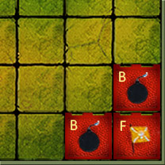
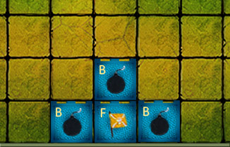
- 2. Plaats niet te veel bommen op de voorste rijen. Je belemmert je eigen speelstukken ermee.
- 3. Zet een paar hooggeplaatste stukken in de frontlinie, maar wees voorzichtig! Als je ze verliest vroeg in het
spel
ben je haast verloren.
- 4. Verkenners moet in de frontlinies u te helpen de rangen te ontdekken van je tegenstander.
- 5. Plaats een aantal mineurs aan de laatste rij van het speelbord, want je zal ze nodig zijn om bommen
onschadelijk te
maken op het einde..
- 6. Hou je spion in de buurt van je generaal. Mocht je generaal bedreigd worden door de vijandelijke maarschalk,
dan
kan de spion je generaal dekken
WINNEN VAN EEN SPEL
De eerste speler die de vlag van de tegenstander kan verslaan wint het spel.
Als je geen beweegbaar stuk meer bezit, verlies je ook het spel